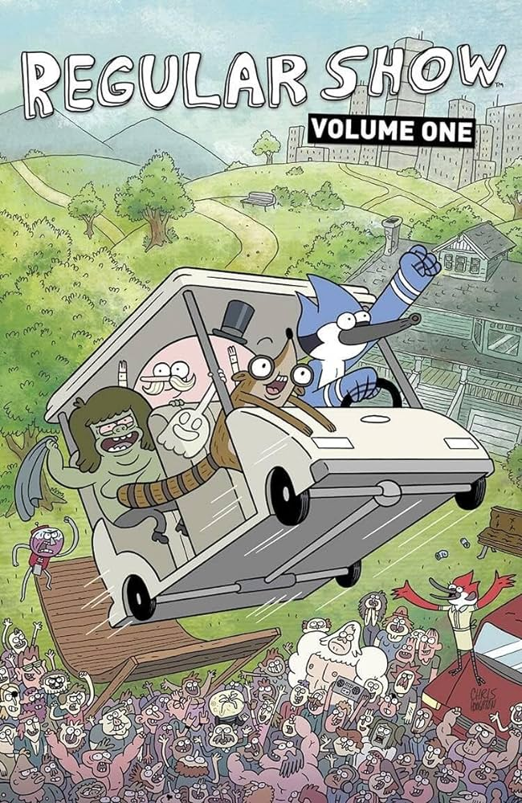
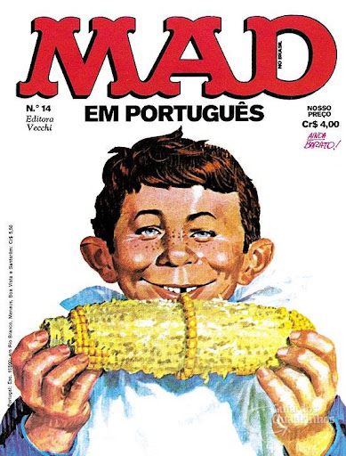
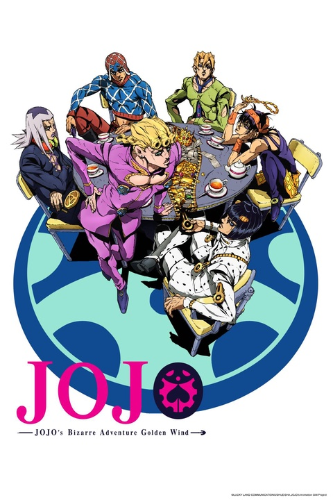

📅14 de Outubro de 2023
One Piece (1999) : Uma Aventura Épica pelos Sete Mares do Mundo dos Mangás
Explorando a Jornada Pirata de Luffy e sua Tripulação: Amizade, Determinação e o Sonho do 'One Piece'

📅14 de Outubro de 2023
Apenas um Show (2010) : Uma Mistura Hilariante de Loucura e Nostalgia Animada
Como um unicornio que caiu do ceu e precisa fazer uma prova da historia americana para impedir a explosão do
planeta é uma coisa genial

📅15 de Outubro de 2023
Haikyuu (2014) : Uma Experiência Eletrizante no Mundo do Voleibol e da Amizade
Explorando o Espírito Competitivo e o Crescimento Pessoal através do Poder do Trabalho em Equipe e
da Determinação

📅17 de Outubro de 2023
MAD (2010) : Um Marco da Sátira e da Criatividade na Cultura Pop
Navegando pelos Confins do Universo em Busca da Salvação da Humanidade e do Destino da Terra

📅23 de Outubro de 2023
JoJo's Bizarre Adventure (2012) O Legado Herdado: Duelos, Mistérios e
Destinos Entrelaçados
Explorando as Crônicas de Coragem, Estratégia e Determinação em uma Aventura com muitas poses e bizarrices